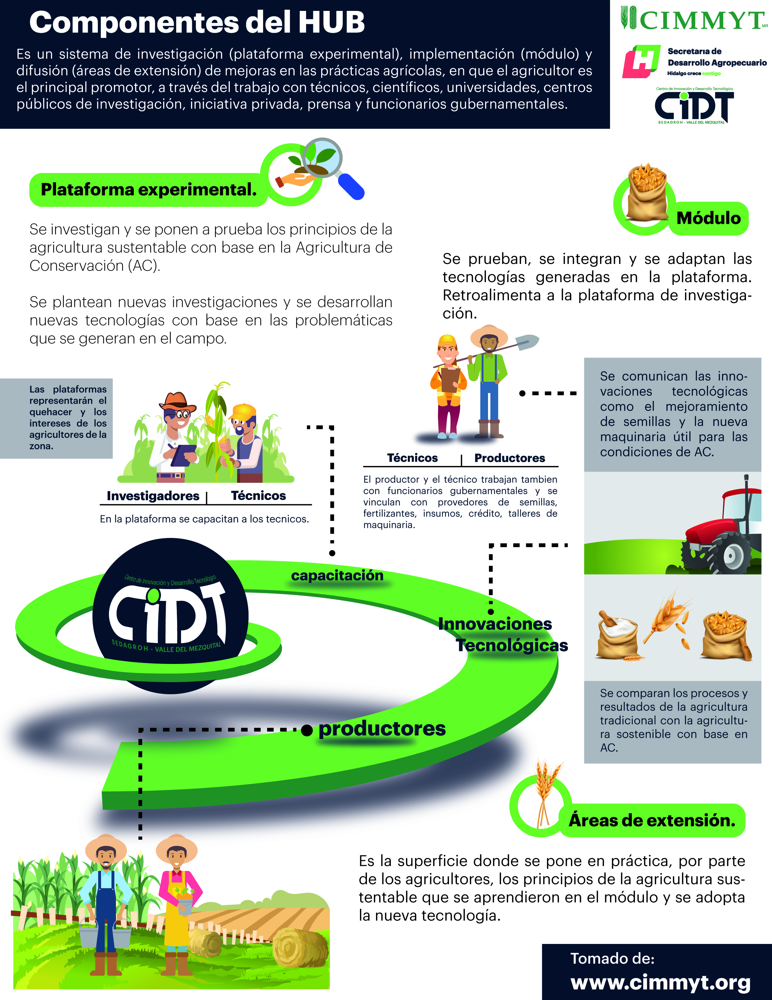

© 2019 Gobierno del Estado de Hidalgo
El CIDT es un espacio de 4.5 hectareas de cultivos experimentales donde se realiza investigación dirigida a temas agrícolas de relevancia para el Estado de Hidalgo. Se encuentra ubicado en la Carretera Mixquiahuala-Tezontepec Km 3.5, Mixquiahuala de Juárez, Hidalgo.
El CIDT forma parte de la estructura de la Secretaría de Desarrollo Agropecuario del Estado de Hidalgo (SEDAGROH), desde donde es administrado y dirigido.
Actualmente y bajo un esquema de colaboración con instituciones de liderazgo mundial como lo es el Centro Internacional de Mejoramiento de Maíz y Trigo (CIMMYT), la SEDAGROH a través del CIDT está trabajando en la estrategia del Gobierno del Estado para la erradicación de la pobreza y el fortalecimiento de las acciones en seguridad alimentaria; con la firma del convenio entre la SEDAGROH y el CIMMYT se instaura el programa MasAgro Hidalgo, donde se establecen compromisos para generar soluciones a las necesidades de nuevas tecnologías sustentables, en beneficio de productores hidalguenses.
Objetivo |
Responder a las necesidades de investigación, validación, capacitación y trasferencia de tecnología que demandan los pequeños productores en la región del Valle del Mezquital. |
Misión |
Generar conocimientos científicos y tecnológicos para ser aplicados de manera sustentable y acorde a los recursos disponibles de los productores en aras de incrementar la productividad del campo hidalguense. |
Visión |
Consolidarse como un Centro de Investigación y Desarrollo Tecnológico líder en la región, con capacidad de atender las necesidades de los productores agrícolas hidalguenses. |
El CIDT forma parte de la red de 8 plataformas del CIMMYT denominada “Valles Altos”, ubicadas en los Estados de Hidalgo, México y Puebla. Estas plataformas contribuyen a mejorar la vida de los productores desarrollando investigación agrícola para combatir la pobreza por carencia alimentaria, la desnutrición, el cambio climático y la degradación del medio ambiente.

✓ Por medio de convenios de colaboración. ✓ Por medio de peticiones directas para apoyo con asesorías, visitas técnicas, cursos y conferencias. ✓ Y por medio de la presentación de los resultados en materia de investigación y boletines que se publican periódicamente. El objetivo de la vinculación es interactuar con todos los actores que participan, formado una red que es clave en el proceso de investigación, validación, innovación y transferencia de nuevas tecnologías agronómicas que impacten en rendimientos más altos y sustentables en la producción de granos.
Transferir en beneficio de los productores agrícolas, los conocimientos, prácticas y tecnologías que se generaron y validaron en la plataforma, es la tarea más importante del CIDT. La aplicación de las innovaciones y metodologías validadas comienzan en los módulos de la plataforma y continúan en las áreas de extensión formadas por 628 hectáreas, para posteriormente replicarse en las áreas de impacto en distintas regiones del Estado, atendiendo su vocación productiva.
El CIDT a través de la SEDAGROH ha establecido un catálogo de servicios en favor de los productores agrícolas del Estado, con el objetivo de eficientar los procesos agrícolas, siendo mas productivos con la aplicación de las nuevas prácticas agronómicas validadas.
Oficinas del Centro de Innovación y Desarrollo Tecnológico Cinta Larga CIDTCalle Pedro Moreno #76, Colonia La Reforma, Mixquiahuala de Juárez Hidalgo. Tel: (738)-7352739
© 2019 Gobierno del Estado de Hidalgo